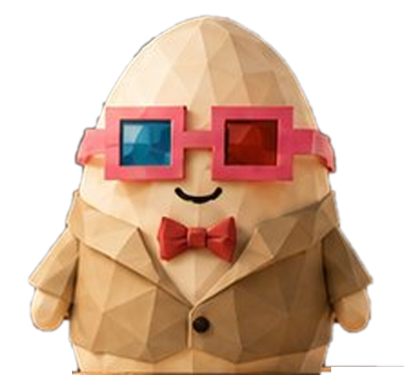

1. 混乱の正体は「口」と「受け答え」を1つの問題にしていたことです。 口は絵の問題で、1回作れば追加料金は0円。声と受け答えだけが分単位でお金が出ます。 だからこの台は、口は3つとも同じものにして、声だけ差し替えてあります。比べるのは声と値段だけです。
2. 「GPT Liveの方が安い」は、公式の数字を並べると逆でした。 アイリス（xAI）は定額で12.6円/分。GPT Liveは上限15.1円/分。 いちばん安いのはGemini Live（上限3.6円/分、無料枠なら0円）です。表は下にあります。
3. ★口が不自然な原因は、推測ではなくコードの中にありました。
いまの案内人（assets/431-seihon/avatar431.js）は、口の「開き」を音の大きさだけで決めています（var want = Math.min(1, lv * 1.95)）。
母音ごとの開き方の数字は同じファイルにもう書いてあるのに、1度も使われていません（VIS[vis][1] がコード中に出てこない）。
だから「あ」も「い」も「う」も同じ開き方になる。すでに在る数字を使うだけで直ります。追加料金0円。
下の台で、左右に並べて見比べられます。

左右とも同じ台本・同じ拍で動かしています。違うのは式だけです。
・左＝たてはばは音の大きさ由来の一定の開閉／よこはばだけ母音を55%だけ混ぜる（いま本番で動いている式）
・右＝たてはば・よこはばとも母音の表（VIS）をそのまま使う／ま行・ば行・ぱ行の前に唇を閉じる
声はこの端末に入っている読み上げ（Web Speech API）です。0円・鍵なし。声と口のタイミングは端末ごとに前後します（口の形を見比べる台なので、ずれても比べられます）。
鍵は XAI_API_KEY2。置き場はMacではなくSupabase の Secretsで、窓口は voice-session。
本番でもう鳴っていますので、この台では作り直さず本物を鳴らしに行きます（作り直すと、比べているものが「声」ではなく「別の実装」になります）。
2026-09-23 10:56 の実測：窓口の財布は上限 $4.50 のうち $1.96 使用済み、残り約 $2.54 ＝ 約399円 ＝ 約31分。使いすぎないでください。
★voice と turn_detection は必ず明示すること（未指定だと既定値で埋められて、早回し／無反応になります）。
★今は鳴らせません。OpenAI側が残高切れ（429 insufficient_quota）です。課金はたまごさんの判断なので、この台では見積りだけ出します。
★この15.1円/分はOpenAI自身が書いた換算から出しています。現行の料金ページには「1分＝何円」は書かれていません（→ 下の「取れなかったもの」）。
★いちばん安い候補です。しかもこの台の上でそのまま鳴らせます（静的なHTML1枚で繋がる形は、#966 でもう通してあります）。 鍵はこの端末の中だけに保存され、Google以外のどこにも送りません。
受け答えはできません（決まった文を読むだけ）。口の作りを確かめる用と、鍵が無いときの逃げ道です。
| 声（頭と耳も込み） | 1分あたり | 月額 | いま鳴るか | 受け答え | 公式の出典 |
|---|---|---|---|---|---|
| D 端末の読み上げ Web Speech API |
0円 | 0円 | ◯ | ✕ 読むだけ | MDN |
| C Gemini Live gemini-3.8-live |
0〜3.6円 | 0円 | ◯ 鍵を入れれば | ◯ | ai.google.dev |
| A アイリス xAI Grok Voice |
12.6円 | 0円 | ◯ 本番で鳴っている | ◯ | docs.x.ai |
| B GPT Live gpt-realtime |
上限 15.1円 | 0円 | ✕ 残高切れ | ◯ | openai.com |
| （参考）HeyGen LiveAvatar・絵まで込み |
15.7〜31.4円 | 2,986円〜 | ─ 未契約 | ◯ | help.heygen.com |
数え方：★A は定額（$0.08/分。聞くも喋るも込み）。★B と C は「聞いた1分＋喋った1分」を足した上限で、実際の会話は交互なのでこれ以下になります。 B＝入力 $32/1Mトークン・出力 $64/1Mトークン に、OpenAI自身が公式ブログに書いた換算（音声入力 約$0.06/分・出力 約$0.24/分 ＝ 当時の $100/$200 per 1M）から出した600トークン/分（聞く）・1,200トークン/分（喋る）を当てはめた値：$0.0192＋$0.0768＝$0.096/分。 （★OpenAI自身が「聞く」と「喋る」で別のトークン数を前提にしています。その対応をそのまま持ってきました。推測は足していません。） C＝公式ページが $/分 を直接書いています（入力 $0.005/分・出力 $0.018/分 ＝ $0.023/分）。 HeyGen＝1クレジット $0.10 で Full 30秒（＝$0.20/分）／Lite 1分（＝$0.10/分）、Starter $19/月。
VIS の表）を使うだけ。追加のGPUも通信も課金もゼロ。
「あ」「い」「う」で口の形が変わり、ま行・ば行・ぱ行で唇が閉じる。一番安くて、一番効きます。上の台で見比べてください。
出典：wawa-lipsync（MIT）／VRMの口は A・I・U・E・O の5母音（#961で調べ済み）口は「1」で行きます。案内人（avatar431.js）の口を、母音の表を使う式に差し替える。追加料金0円。
HeyGenもAudio2Faceも、ここが直ってから比べれば十分です。
声は「C（Gemini Live）を土台、Aは残す」で行きます。Cは0〜3.6円/分でいちばん安く、この台の上で鳴る。 Aは12.6円/分ですがすでに本番で鳴っていて、たまごさんの理想の声なので、残り31分ぶんは「この声じゃないとダメか」を決めるためだけに使ってください。
Bは、たまごさんが課金を決めるまで触りません。公式の数字で並べる限り、Aより安くはありませんでした。